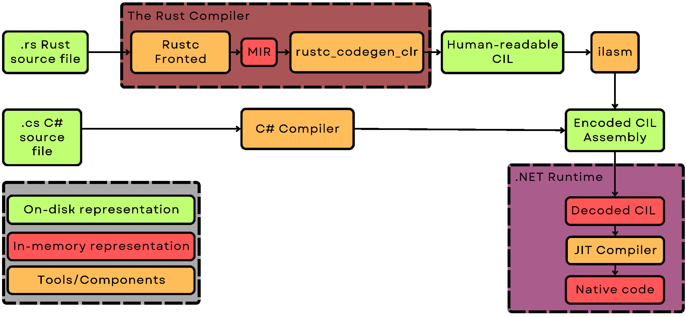

I have spent a good chunk of the past 6 months trying to bring Rust to .NET.
During that time, I had learned quite a bit about both the Rust compiler, and the .NET runtime. In this article, I will write about the most interesting parts of this journey: interesting quirks of software, challenging problems, my weird solutions to them.
So, first of all, what exactly is rustc_codegen_clr? How can it compile Rust code for the .NET runtime?
rustc_codegen_clr is, as the name implies, a codegen backend for the Rust compiler(rustc) targeting the .NET runtime (Common Language Runtime).
Let me now explain what is a codegen backend:
It is the part of the compiler responsible for the last stage of compilation (Code generation, codegen for short). Due to the modular nature of rustc, it can be easily swapped out. The name Code generation may seem confusing at first, but it describes the actual function of this module quite elegantly.
Any rust compiler backend simply takes the simplified representation of your program(MIR, or Mid-level IR), and turns it into an executable file. "Code" in this name refers to "native code" or the compiled assembly instructions.
In the case of my project, the final executable file is not meant for any specific CPU: it is a portable .NET assembly.
This is possible due to the language-agnostic nature of .NET: the runtime is that it does not really care what language an assembly was written in.
C#, F#, Visual Basic - they are all the same from its perspective.
During compilation, all of them get turned into what is called Common Intermediate Language(CIL for short).
The contents of individual classes and methods does not matter for the runtime - all that is important is that the assembly contains valid CIL.
With that in mind, you can start to see the whole picture: this project simply takes in the Rust MIR, and turns it into .NET CIL.
Type by type, method by method, op by op - a Rust program is accurately translated into a .NET assembly.
There are many benefits to this approach. The compiled assembly can easily use all .NET APIs, and can run on any architecture supported by .NET. ARM, RISC-V, x86_64 - all can run the same executable.
I also get to leverage the power of the whole Rust ecosystem. Type checking, borrow checking, optimizations - all those things are preformed by the same good old Rust compiler.

This also means that I can (at least in theory) compile ANY Rust library or app for .NET. There is little need for any changes - most Rust code should work out of the box.
Currently, the project is capable of compiling the unmodified Rust standard library. Of course, a lot of it does not work yet: the project is still in its early days. The compilation is not yet 100% accurate - and a very small difference may cause a program to not work.
Getting perfect accuracy will take time, but what already works shows that this approach is more than feasible.
Take this snippet of Rust code as an example:
// Uses the heap allocator to create a new string.
let mut string = String::with_capacity(100);
// Appends characters to the string
string.push('H');
string.push('e');
string.push('l');
string.push('l');
string.push('o');
string.push('.');
string.push('\n');
string.push('\0');
// Built-in standrad output does not work yet(since it uses atomics) but C `puts` does.
unsafe{puts(string.as_ptr())};While it is not fully operational, it shows that the String type works properly. A buffer is allocated, and filled with characters. It is not much - but it does show that, in the future, a vast majority of Rust crates (libraries) and programs could just run within the .NET runtime. There are some places where changes may be very beneficial (mainly - the standard lib), but in most cases - they will not be strictly necessary.
So, now that I explained what the project is, let me tell you a bit about what I learned working on it.
I could write a whole series of articles praising CIL - it is very well-designed. It is not overly complicated, while still being able to efficiently store complex programs.
The MIR to CIL translation is very straightforward, as far as compiler-related stuff goes. I was able to map almost all MIR concepts directly to CIL, without changing almost anything. For each MIR statement, you can easily find the corresponding sequence of CIL instructions in the final assembly.
//_4 = Add(move _5, const 2_i8)
ldloc.s 5
ldc.i4.2
conv.i1
add
stloc.s 4This makes debugging relatively painless, since I can pinpoint the exact MIR statement which was improperly translated.
When the config variable TRACE_STATEMENTS is set to true, the codegen will insert additional instructions which make the runtime print each statement it executes. Even things like local variables map directly from MIR to CIL.
A funny side effect of using CIL was the ability to turn Rust into unsafe C#. Since C# decompilers can turn CIL into C#, there is nothing stopping me from just taking the CIL produced by rustc_codegen_clr and feeding it to a decompiler. Quite a few of them freak out here and there(e.g. IL Spy sometimes crated variables without names), but I was able to use them for debugging purposes, and turned a few simple Rust programs into C#.
The internal APIs of Rustc are very pleasant to work with, once you get the hang of them. There are some things to be weary of, but most pitfalls are quite easy to avoid once you know about them. It is honestly quite hard to say much more than that: a bad API is obvious, but a good one is often unnoticed. It does its job, and it does it well.
The way things are organized also made it easy to follow good coding practices. I don't have much experience writing large projects: the ones I wrote before were significantly smaller. I feel like, in this case, I still managed to keep things organized, mostly due to the way MIR is structured. It has a nice hierarchy, which I could follow and structure my project accordingly. Most elements of MIR are simple, and have a very well-defined function, which made splitting the codebase really easy.
One thing I want to quickly mention is the numerous small optimizations sprinkled trough rustc.
I did not aim for high performance with the first version of my project - yet the whole thing still runs at an OK speed, even though I am leaving a lot of optimizations on the table.
I could probably improve the performance by quite a bit - but I don't need to. The rest of the compiler is very well optimized. This makes the cost of not writing optimal code not high enough to warrant refactors.
For reference, it takes rustc_codegen_clr about 20 seconds to compile the whole standard Rust library, using an unoptimized debug build of the codegen. It is noticeably slower than the default LLVM backend, which finished the job in 14 seconds. Still, since the rest of the compiler is fast enough, I can allow myself a bit of leeway when it comes to not writing optimal code.
One big drawback of rustc is its steep learning curve, which I will have more to say about later.
Now, I would like to talk about some technical issues I had to solve along the way.
The biggest issue with compiling Rust for .NET were, predictably, generics.
But - not for the reasons you may have expected.
At first, I assumed Rust generics were going to be very hard to understand - but no. Their design is relatively easy to understand, and once it clicked for me, working with them was pretty painless.
A generic in rustc is represented using two, separate, parts: a per-instance substitution list, and a definition ID.
The exact way this data is stored does not really matter, but having a rough idea of how it works helps to understand how they can be translated to .NET generics.
I will try to explain this broad topic I am by no means an expert on, using very simple terms.
Generics in rust are kind of like a soup. Most of the time, they are stored "uncooked" - not ready for consumption quite yet.
They consist of 2 parts:
The list of "ingredients" - this is the subst list, attached to each instance of a type. It contains a list of types necessary to create("cook") a specific instance of a generic type. For a Vec<i32>, it would be i32, for Vec<SuperFancyType> it would be SuperFancyType, for MyType<A,B,C> it would be A, B, C.
The "recipe" - this is a part of the type's definition, referenced using a DefID. It contains the information on how to substitute the individual parts of a type (how to "cook the soup"). The substitution process can be both ridiculously simple and complex - it all depends on the type in question. This is where a lot of the Rust type magic happens: This part is responsible for handling of A LOT of complex things. Advanced rust features, such as associated types, are possible thanks to this part. But it also becomes relevant when talking about simpler Rust features, such as fat pointers. A type like this:
// T may be a sized type(u8) or an unsized type(slice)
struct PointerTo<T:?Sized>{
// Fat or not? Who knows?
ptr:*mut T,
}Needs some special handling by the codegen.
I would say that this system of powerful "recipes" is the main reason the Rust type system can express things .NET can't.
Generics in .NET are sleek and simple - and for a good reason.
.NET allows you to create a new instance of a generic type after compilation - this makes more complex generics harder to get right. Rust generics are mostly a compile time construct - which simplifies them quite a bit.
Since in .NET generics are much simpler, surely translating Rust ones to .NET is going to be challenging?
Shockingly, translating Rust generics to .NET turned out to be relatively straightforward. I won't bore you with the exact details, but I simply used more generic arguments to "emulate" the more rich Rust type system. I walked through the type, and analyzed the way substitutions happened. Consider this type:
struct IteratorAndItem<T:Iterator>{
// Stores an iterator
iter:Iterator,
// And the item it returns
item:Iterator::Item,
}How can we express it in C#?
struct IteratorAndItem<Iterator,IteratorItem>{
// Stores an iterator
Iterator iter;
// And the item it returns
IteratorItem item;
}By storing additional information, I was able to simplify the substitution enough to allow for a clean translation. An analogous approach was taken for each part of the Rust type system.
There are, of course, some edge cases: I discovered a class of Rust types which can't be expressed in .NET, but all of them have workarounds.
The main reason I attempted to get generic types to work was interop. I already have a Rust-to-C# interop mostly figured out(I have written about it in a previous article), but calling Rust from C# is still a bit nasty. Translating generics was very important here, because it is a bit easier to type Vec<int> rather than something like _ZN5alloc3vec3Vec17h56ae686ac0459a2dE. Looking at the second option for more than a second makes it obvious why I tried to avoid name mangling like a plague.
In initial tests, this system worked quite well, and I was really, really proud of it.
And then I fixed a small bug(a little explict missing, nothing major), and realized I have to scrap the entire idea altogether.
It turns out, I am a dumbass and forgot about a pretty big and annoying issue: a generic .NET type can't have an explicit layout.
What does that mean, and why is it a problem?
Using explicit layout allows me to control how exactly a type is laid out in memory. This is necessary to get things like Rust enums and union's to work properly.
Rust enums are a little bit more powerful than their C# counterparts. Conceptually, they are a bit more similar to polymorphic types. In C#, you can make an Animal class, and create child classes Dog and Cat. Those classes may have their own unique data and virtual functions, and we may store them behind a reference to their parent type Animal.
Animal AnimalFromSound(string sound){
if sound == "Woof"{
return new Dog();
}
else if sound == "Meow"{
return new Cat();
}
throw new AnimalUnknownException(sound);
}The C# function presented above is roughly equivalent to this snippet of Rust code:
fn animal_from_sound(sound:&str)->Animal{
match sound{
"Woof"=>Animal::defualt_dog(),
"Meow"=>Animal::defualt_cat(),
_=>panic!("Unknown animal sound:{sound}!"),
}
}The big difference between a C# polymorphic type and a Rust enum comes from the way they are stored. A C# polymorphic type is stored as a pointer to the managed heap. Before type data, there is a type tag and a pointer to a Vtable. This means that this type is easy to extend (we can just declare a new child class), but it is a bit slower: there are a couple layers of indirection that slow calls to virtual functions down.
In Rust enums, the tag and data live together exactly where the type is. You can store a Rust enum on the stack, and the bytes that compromise it will be there. The data of different variants of the enum lives in the same place, and it may overlap. The field "lastScrathed" of Cat may lay at the same offset as "lastWalked" of Dog. This is not an issue, since we use the tag to check the variant: it is impossible to access the data of the wrong one.
This makes Rust enums harder to extend: you have to edit the definition of the enum to add a new variant. They are kind of like sealed C# types in this regard: we can't just add a new variant to a type from an external library. But this unusual layout of Rust enums also makes them very speedy and memory efficient - there is no indirection, and they can live entirely on the stack.
Of course, this is an oversimplification. You could write quite a bit of articles delving into the exact inner workings of Rust enums and .NET polymorphic types, but this rough understanding should be good enough here.
The important thing is that without the ability to make the data of different variants overlap, we lose almost all the advantages of a Rust enum.
So, you may wonder: why can't generic types have explicit layout in .NET?
The reason is quite simple: It could confuse the GC, and cause crashes and instability.
There are a lot of things that are needed for a GC to work. A performant GC must know where exactly are the references are in a type, in order to work properly.
Consider this little abomination:
[StructLayout(LayoutKind.Explicit)]
public struct Scarry
{
[FieldOffset(0)]
private string reference;
// Overalps with `reference` - they occupy the same place in memory
[FieldOffset(0)]
private unsafe long* ptr;
}Is the data inside this struct a managed reference to a string, or an unmanaged pointer? Who knows? The GC certainly does not.
It is not possible to tell if this struct contains a managed reference or not. If it is a reference - the GC should deal with it. It should check the type it points to, and then mark it as "alive". But this filed could also be an unmanaged pointer! In that case, GC should not touch it. If it does, it would crash at best, and at worst - it could corrupt some other, unrelated memory.
Because of the danger it poses to GC, this type is strictly not allowed.
Generics with explicit layout are not better. The problem still remains - in a new, even more terrifying form.
[StructLayout(LayoutKind.Explicit)]
public struct ReferenceOrNot<T>
{
[FieldOffset(0)]
private T reference;
// Overalps with `reference` - they occupy the same place in memory!
[FieldOffset(0)]
private unsafe long* ptr;
}If we never use a GC managed type here, this example is completely benign. But, this type is a hidden time bomb: if someone instantiates it with a T that is a managed type(e.g. object, string, int[]), it will break the GC.
It is quite obvious this can't be allowed. There are 2 solutions to this problem:
The first option has a lot of nasty edge cases, which should be considered carefully. It is not trivial to check if a type is managed, and adding support for such generics also requires additional work on the compiler side of things. It also would not be very user-friendly. Also, it is quite easy to accidentally make type managed - if a struct references a managed type, it will become managed too.
This is a tricky problem with potentially disasters consequences - the whole runtime could crash, if this is not prevented. The more radical solution 2 is the safer bet - so I am not surprised it is the one the .NET team went with.
So, that explains why generics with explicit layout are not allowed. What did I learn from this? I probably should slightly more research before sinking time into a weird tangent. The whole The project still works without this clean Rust-to-.NET translation of generics. I am currently using mangled type names as a workaround.
It is annoying to know my problem is not strictly a technical one (there are some modified versions of .NET which allow this), and that I can't do anything about it. But I understand why things are the way they are: .NET is not small toy software. It is used for a lot of very, very important stuff. Stuff that all of us would prefer to stay running.
So, while I would prefer if a more forgiving solution was used, I can't deny that, in this case, it is better to be safe than sorry.
I ended up just using name mangling. It is not pretty...
[StructLayout(LayoutKind.Explicit)]
public struct _ZN4core5panic10panic_info9PanicInfo17ha57987986f46e937E
{
[FieldOffset(0)]
public _ZN4core3ptr8metadata13PtrComponents17hf8be5d5a15006b33E payload;
[FieldOffset(16)]
public _ZN4core6option6Option17h72d93616c94b4333E message;
[FieldOffset(24)]
public unsafe _ZN4core5panic8location8Location17hdfe254613f931640E* location;
[FieldOffset(32)]
public bool can_unwind;
[FieldOffset(33)]
public bool force_no_backtrace;
}...but it does the job - and that is what really matters.
Another, smaller issue related to .NET is its all-or-nothing verification: an assembly can either be safe (no pointers used) or unsafe. There is no in-between. The problem is that enabling the use of pointers disables nearly all checks, many of whose I would like to remain on.
Consider this bit of invalid CIL:
.assembly Wrong{}
.class SomeValueType extends [System.Runtime]System.ValueType{
.field float32 a
.field float32 b
}
.class Issue{
.method static native uint InvalidMethod(){
.locals init(
[0] valuetype SomeValueType
)
// Loads zero-initialzed SomeValueType
ldloc.0
// Returns SomeValueType as nint. This is invalid, and would cause an exception in mono.
ret
}
.method static void Main(){
.entrypoint
call native uint Issue::InvalidMethod()
conv.u8
// Prints 0
call void [System.Console]System.Console::WriteLine(uint64)
ret
}
}Its snippet is invalid, and its behavior is not defined by the standard. It loads a value of type SomeValueType and then returns it as an integer.
It does not covert this value to an integer - it just interprets its bytes as one. This is not something you should be able to do.
Sadly, neither ILVerify nor the .NET runtime detect this when unsafe code (pointers and such) is enabled. This is something that *is worked on (currently seems to be planned for .NET 9), but the lack of such a feature made debugging more painful than it had to be.
I have already talked about how it felt to use the compiler-internal rustc APIs. But a good API is not all that makes or breaks a tool. What is, arguably, even more important is the experience of a newcomer. In this area, I have a lot of praise to give, but there are some rough spots I would like to point out.
A lot of those are my very subjective opinions and experiences. So, before I talk about them, I want to make some things clear.
I am not an expert. I am 18, and don't yet have any formal CS education. Some of the things I struggled with may be just the result of my lack of experience. All that I write should be read with this in mind.
Let me start by praising what I believe to be the very best thing about the Rust compiler: The people working on it.
I have some... social troubles. I will not go into details here, but I normally struggle writing/talking to people I do not know well, especially if I hold them in high regard. So, the (relative) ease I had asking for help shows just how welcoming and helpful the people over at rustc zulip are.
Asking my very first question was still a challenge, but, after a couple of initial interactions, a lot of my troubles diapered. All of my questions were answered with detailed explanations, which included additional helpful tips. I always felt like people who responded to me were eager to help, and seemed to genuinely want me to succeed. While that might not mean all that much to some, I genuinely appreciated the general positive attitude. It really helped to alleviate some of my issues.
The development guide is well written, and straight to the point. There is not much more to say about it - it does it's job.
It explains the overall architecture of the compiler really well, and I would say it is worth reading even if someone does not want to work with or on rustc at all.
I will now talk about the areas where the compiler is lacking.
There is no going around this: rustc is not documented nearly as well as it could be. A lot of functions, types, traits have no documentation at all. This is a growing pain of rustc - it develops very quickly, and the documentation seems to simply be incapable of keeping up. And that is a real shame, because I believe a lot more people could use the compiler-internal APIs, if the documentation was just a bit better.
This incomplete documentation was probably the single, the biggest roadblock during my work.
Quite often, I would spend a couple of hours, trying to deduce how something worked exactly. I tried to guess the exact inner workings of certain functions by their name alone. I mostly succeeded, but there were times at which I mis-guessed something terribly.
The documentation also does not mention quite a bit of edge cases, which leads to confusion. As an example: what is the difference between FnSig and FnAbi?
Well, FnSig represents a function signature, and FnAbi stores a signature + additional information about the call (calling convention, argument layout, how to behave on unwind, is it variadic).
This is all you could deduce from/are by the documentation, but there are some important things it does not mention.
Do you know that the number of arguments may differ between FnSig and FnAbi? The signatures stored in FnSig and FnAbi are not guaranteed to match!
One big culprit behind this weird issue is #[track_caller]. This truly magical attribute is wonderful for debugging - but it introduces added complexity.
#[track_caller] inserts a hidden, invisible in MIR, argument of type PanicLocation. This hidden argument changes up a lot of stuff. There are some really fascinating things going on behind the scenes - especially when we take a pointer to this function. All of this complexity should be handled - but it is easy to overlook this edge case, if you don't know about it.
A better documentation could mention this fact - something along the lines of "NOTE: the signature represented by FnAbi may differ from the one found in MIR".
While improving the documentation is a task of gargantuan proportions, the benefits are numerous.
First of all, I would like to once again reiterate:
I believe a LOT more people could use the internal APIs, if they were better documented. While not trivial, rustc is also not too hard to understand!
More people working on the compiler could bring Rust to new heights. Besides the potential to develop rustc itself further, there are a lot more areas for growth here:
You could, for example, write a rustc backend targeting the JVM, bringing Rust into yet another ecosystem.
Compiling Rust to C is also not out of the question - this could enable the use of the language in some embedded spaces.
I also believe there is an opportunity for really, really, powerful metaprograming, lurking just behind the corner.
The rough idea is kinda similar to proc-macros, except that it operates on the MIR, and not token streams.
This could enable things like reflection: a crate could just get all the info the compiler has, and generate new code appropriately.
This may be a terrible idea, but one that has some interesting ramifications. Since it would operate on MIR, it should be able to do nearly everything the compiler can. Depending on some other stuff (like certain security considerations), it could also be quite performant.
I will probably write another article on this, if/when I have time.
The documentation of the more mature .NET environment is better, but it still has some small issues. The behavior of the runtime and the Microsoft documentation seem to deviate slightly from the official spec.
According to Microsoft docs, the result of the ldloca op is a pointer
The result is a transient pointer (type *).
According to the 2012 ECMA standard, this results in a reference
The result is a managed pointer (type &).
The .NET runtime seems to work with both interpretations, so this is not a big problem, but the ambiguity makes me a bit anxious. Due to this small difference, some of my programs may not be entirely spec compliant. The spec is quite old, so I trust the MS documentation more, but a clarification may be needed.
Both Rustc and .NET are amazing tools, but they all have their pain points. The learning curve of rustc is step, but - I feel like pushing through despite the issues is more than worth it.
I was also shocked by the positive reception of this project. It currently stands at over 650 stars on GitHub, which is around ~3x more than all my other projects combined. People also seemed to like my writing. This helped me to go through some of the tougher parts of this year. For that - I would like to thank you - the reader.
Now that all of that is out of the way:
Goodbye and see you next time.